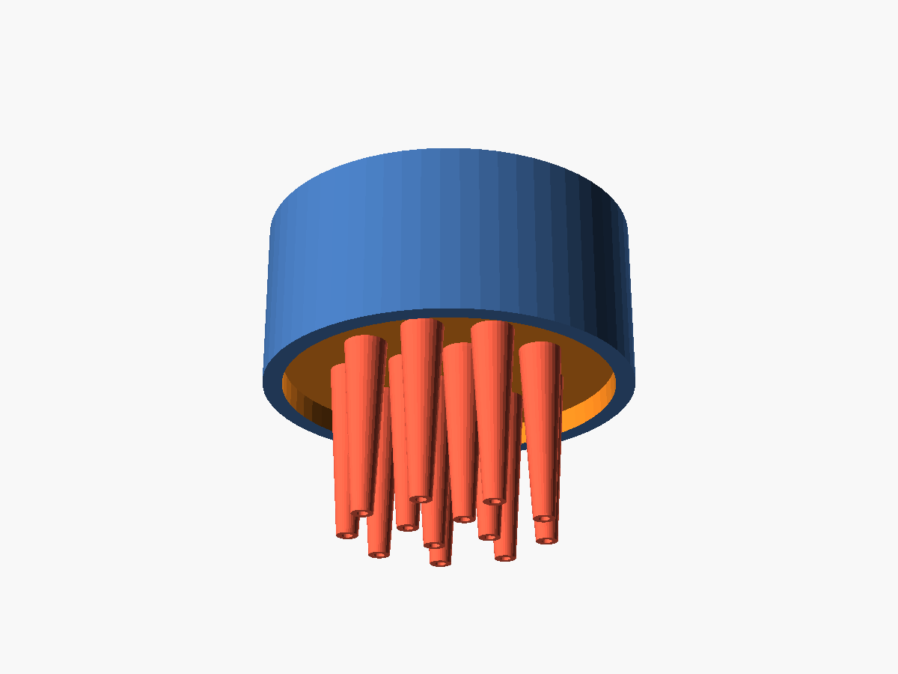
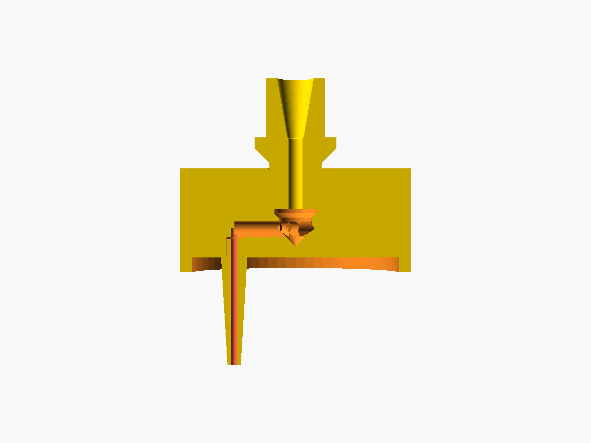
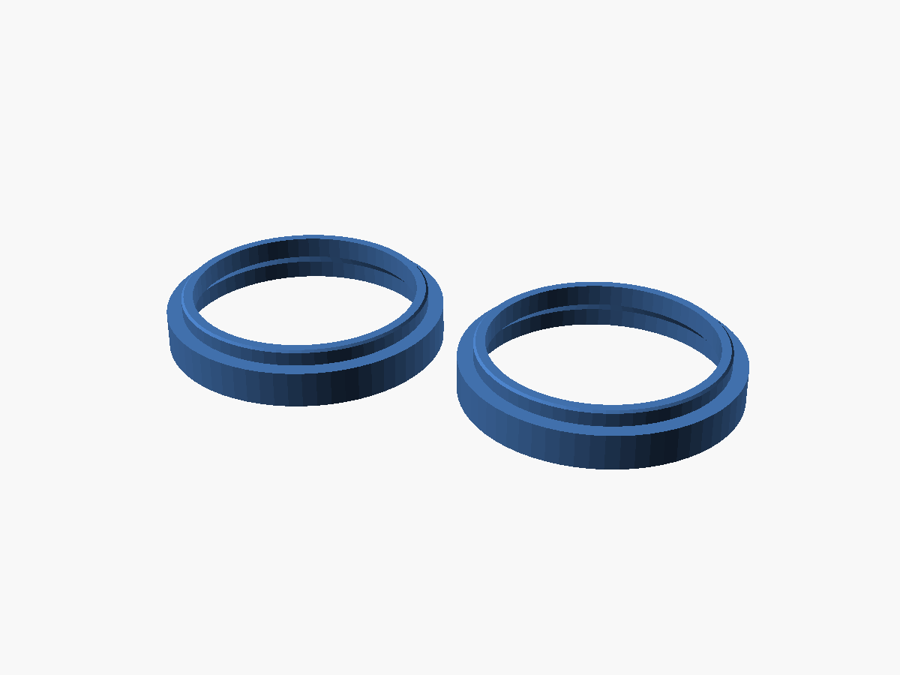
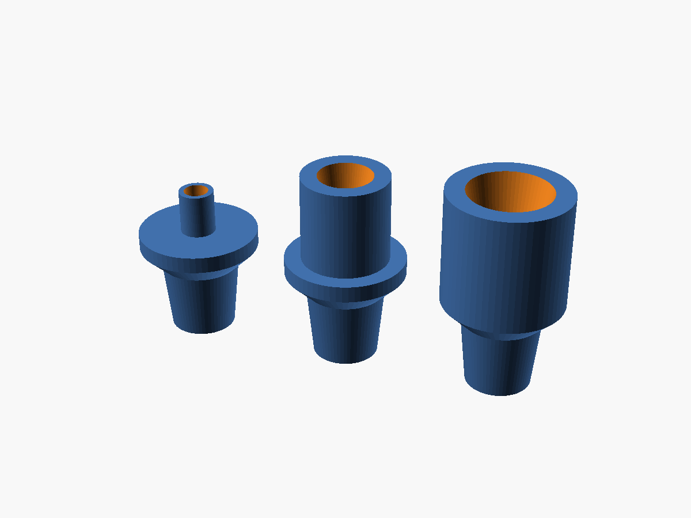
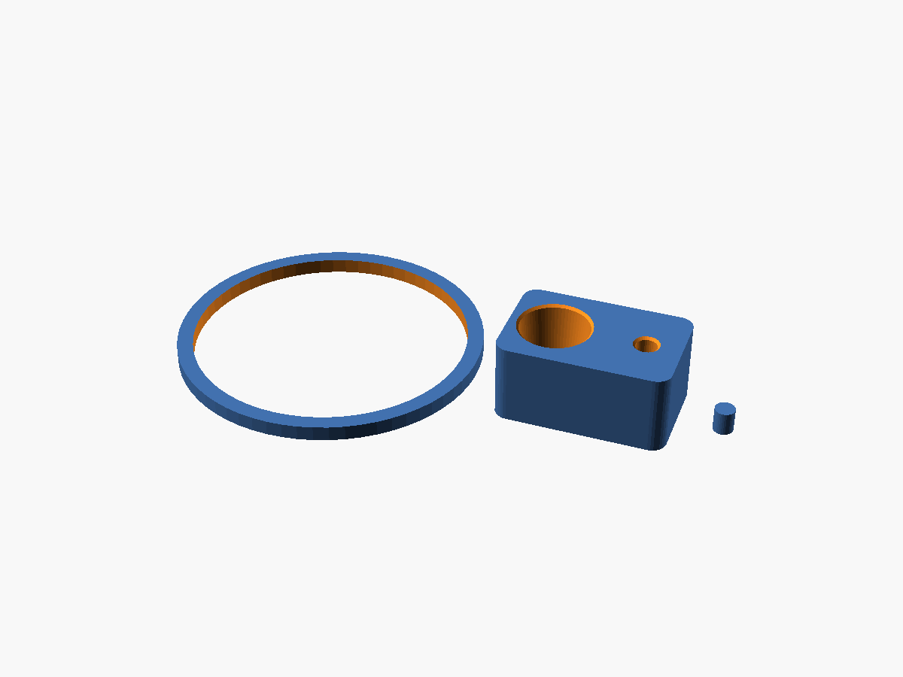

Cabeçote
1 peça
Corpo preto que assenta na boca do pote. Guarda a câmara interna, os 13 canais em gota e os 13 furos onde os bicos são colados. Imprime com a face de cima para baixo, sem suporte.
Medida-chave Ø62 × 28 mm · encaixe no pote Ø55,6 × 4
Impressão 3D · cosmética
Envasa 39 pérolas de gel em 3 camadas num pote de 5,5 cm. Impressão 3D, sem suporte.
Arraste para girar, role ou pince para aproximar. Os modelos são os mesmos arquivos STL que você imprime; pote e seringa são ilustrativos.

Camada 1 · cabeçote assentado direto na boca do pote.
O pote já vem com uma base de gel transparente. O cabeçote preto assenta na boca do pote e os 13 bicos ficam mergulhados no gel.
Uma seringa empurra o gel ativo colorido (por exemplo, retinol) por um adaptador até uma câmara interna. Da câmara saem 13 canais em gota, um para cada bico. Cada empurrão deixa uma gota de cerca de 8 mm na ponta de cada bico, já dentro do gel base, onde ela fica suspensa como uma pérola.
Os bicos são 4 no centro, num círculo de Ø14, e 9 em volta, num círculo de Ø33. Para fazer a camada 2 e a camada 3, anéis reguladores de 8 mm sobem o cabeçote. São 3 camadas × 13 = 39 pérolas.

Passo a passo em cerca de 47 segundos. Arraste a linha do tempo para ir e voltar, ou toque num capítulo.
APote vazio na bancada, boca de Ø55 mm.
1 peça
Corpo preto que assenta na boca do pote. Guarda a câmara interna, os 13 canais em gota e os 13 furos onde os bicos são colados. Imprime com a face de cima para baixo, sem suporte.
Medida-chave Ø62 × 28 mm · encaixe no pote Ø55,6 × 4
13 + 2 reservas
Espiga macho colada em cada furo do cabeçote. Quatro ficam no centro, num círculo de Ø14, e nove em volta, num círculo de Ø33. Cada um solta uma gota por empurrão.
Medida-chave furo interno Ø1,8 · comprimento útil 29 mm
2 anéis
Empilhados na boca do pote, levantam o cabeçote para a camada 2 e a camada 3. Um anel para cada camada extra.
Medida-chave sobe 8 mm cada · Ø62 · espiga Ø55,1 × 3,5

3 modelos
Encaixam no cone do cabeçote (cone 1:5, boca Ø14, 12 de profundidade) com folga nominal de 1,5 mm entre a flange e o cabeçote. Escolha pelo bico da sua seringa.
| Sua seringa | Use o adaptador |
|---|---|
| Luer slip ou Luer lock, de 1 a 60 ml (o Luer lock encaixa sem rosquear) | Luer |
| Seringa grande, de 50 a 100 ml, com bico de cateter Ø5 a 9 mm | Cateter |
| Seringa ou bisnaga com bico grosso, Ø9 a 14 mm | Grosso |
Medida-chave Luer ISO 80369-7 (6%) · Cateter Ø5 a 9 · Grosso Ø9 a 14

1 peça · imprima primeiro
Um anel de 3 mm para provar no pote, mais um bloco com o encaixe do adaptador e um furo de cola, mais um pino de teste Ø4. Evita imprimir tudo e descobrir que apertou.
Medida-chave pino Ø4 · furo de cola Ø4,25 · anel de 3 mm

Tem todos os STL e o .scad. Prefere pegar só o que precisa? A tabela abaixo lista cada arquivo. Imprima a peça de teste primeiro.
| Arquivo | O que é | Imprimir | Orientação na mesa | Suporte | Brim | Tamanho |
|---|---|---|---|---|---|---|
| P8000_teste_encaixes.stlBaixar | Peça de teste: anel de 3 mm para provar no pote, bloco com encaixe do adaptador e um furo de cola, e pino de teste Ø4. Imprima primeiro. | 1 | Como está no arquivo | Não | Não | 78,6 KB |
| P8000_cabecote.stlBaixar | Cabeçote com câmara, canais e furos dos bicos. | 1 | Face de cima para baixo | Não | Não | 389,1 KB |
| P8000_bicos_x15.stlBaixar | 15 bicos: os 13 do cabeçote mais 2 reservas. | 1 placa (15) | Espiga para baixo | Não | Sim | 422,0 KB |
| P8000_aneis_x2.stlBaixar | Os 2 reguladores de altura (8 mm cada). | 1 placa (2) | Como está no arquivo | Não | Não | 112,6 KB |
| P8000_adaptadores_x3.stlBaixar | Os 3 adaptadores (Luer, Cateter, Grosso) numa placa só. | 1 placa (3) | Como está no arquivo | Não | Não | 175,1 KB |
| P8000_adaptador_luer.stlBaixar | Só o adaptador Luer (seringas de 1 a 60 ml). | 1 | Como está no arquivo | Não | Não | 62,6 KB |
| P8000_adaptador_cateter.stlBaixar | Só o adaptador Cateter (seringas de 50 a 100 ml). | 1 | Como está no arquivo | Não | Não | 62,6 KB |
| P8000_adaptador_grosso.stlBaixar | Só o adaptador Grosso (bico de Ø9 a 14). | 1 | Como está no arquivo | Não | Não | 50,1 KB |
| Perolizador8000_como_usar.mp4Baixar | Vídeo da animação “Como usar” (1920×1080, 52 s, horizontal). | não imprime | Não se aplica | Não se aplica | Não se aplica | 11,4 MB |
| Perolizador8000_como_usar_vertical.mp4Baixar | O mesmo vídeo em formato vertical (1080×1920), para WhatsApp e stories. | não imprime | Não se aplica | Não se aplica | Não se aplica | 11,4 MB |
| perolizador8000.scadBaixar | Fonte paramétrica do OpenSCAD, para editar folgas e medidas. | não imprime | Não se aplica | Não se aplica | Não se aplica | 18,6 KB |
| Perolizador8000_completo.zipBaixar | Pacote com tudo acima. | não imprime | Não se aplica | Não se aplica | Não se aplica | 318,5 KB |
Tamanhos em KB (1 KB = 1024 bytes). Arquivos individuais de adaptador e a placa x3 trazem as mesmas peças: baixe só o que for usar.
Use P8000_teste_encaixes.stl antes de qualquer outra. Confira três coisas:
No fatiador, mude a "compensação de furos / XY" em 0,1 mm. Ou, no perolizador8000.scad, mexa nos parâmetros folga, folga_cola e folga_cone. Só avance quando o teste fechar.
Tempo de impressão e gasto de filamento: veja no seu fatiador.
Os furos de Ø1,8 são a menor passagem do fluxo. Se um entope, aquele bico deixa de pingar e a camada fica falha.
Os passos seguem a animação, na mesma ordem.
Com o pote vazio na bancada, encha com o gel base transparente até 3 mm abaixo da rosca.
Escolha o adaptador pela sua seringa (Luer, Cateter ou Grosso) e encaixe no cone do cabeçote, descendo e girando ¼ de volta.
Assente o cabeçote na boca do pote. Os 13 bicos entram no gel. Se ainda não purgou, faça antes: encha a seringa com o gel ativo filtrado e solte a primeira gota de cada bico num copo.
Com o gel ativo na seringa, encaixe a seringa no adaptador. Luer lock não precisa rosquear.
Empurre o êmbolo um pouco, devagar e constante. Cresce uma gota em cada um dos 13 bicos e ela fica suspensa no gel.
Tire a seringa e levante o cabeçote. Assente o anel 1 na boca do pote, volte o cabeçote (8 mm mais alto), encaixe a seringa e empurre o êmbolo.
Repita com o anel 2, empilhado sobre o primeiro. Agora são 39 pérolas.
Retire seringa, cabeçote e anéis. Rosqueie a tampa. Lave tudo logo, com água morna passando pela seringa e pelos bicos.
| Peça | Medida | Valor (mm) |
|---|---|---|
| Cabeçote | Diâmetro × altura | Ø62 × 28 |
| Encaixe no pote (folga 0,6) | Ø55,6 × 4 | |
| Bicos (13 + 2 reservas) | Espiga macho | Ø4 × 5 |
| Furo de colagem no cabeçote | Ø4,25 × 5,5 | |
| Furo interno | Ø1,8 | |
| Ponta | Ø3,6 | |
| Comprimento útil | 29 | |
| Posição: 4 no centro, 9 em volta | círculos Ø14 e Ø33 | |
| Fluxo interno | Canais em gota | Ø3,5 |
| Menor passagem do fluxo | Ø1,8 | |
| Encaixe do adaptador | Cone | 1:5 |
| Boca | Ø14 | |
| Profundidade | 12 | |
| Folga nominal entre flange e cabeçote | 1,5 | |
| Anéis reguladores (2) | Diâmetro | Ø62 |
| Altura que cada um sobe | 8 | |
| Espiga | Ø55,1 × 3,5 | |
| Pote usado | Rosca (pescoço) | Ø55 × 15 |
| Profundidade interna do corpo | 20 (35 da borda ao fundo) | |
| Ponta dos bicos acima do fundo, camada 1 | 6 | |
| Pérolas | Tamanho | ~Ø8 |
| Por camada | 13 | |
| Total em 3 camadas | 39 | |
| Adaptadores | Luer: seringas de 1 a 60 ml, ISO 80369-7 (6%) | Luer slip ou lock |
| Cateter: seringas grandes de 50 a 100 ml | bico Ø5 a 9 | |
| Grosso: seringas e bisnagas de bico grosso | bico Ø9 a 14 |